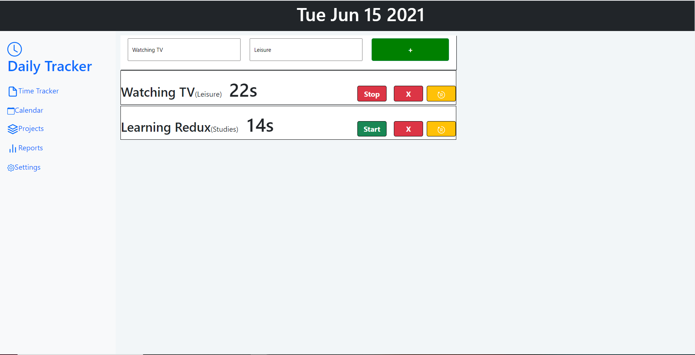

A web application built using React and Redux which allows the user to keep track of the tasks they have been doing throughout the day using timers. The user can also categorize the tasks. This was my first application made using web technologies and was made to familiarize myself with the React framework. I plan on adding a back-end in the future. You can check this application out by clicking on the GitHub icon below. |
 |
|
JavaScript
React
Redux
|
|---|